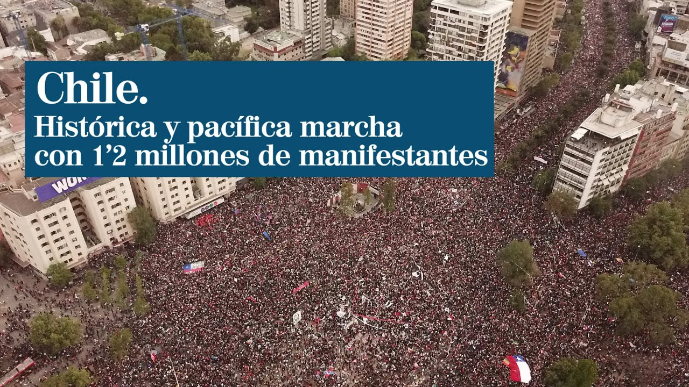

Recordando la marcha más grande de Chile
Nacional
por JC Boudouqué
15 Abril, 2021 - 25 de Octubre, 2019 
Participaron más de 1,2 millones de personas solo en Santiago; el número de personas que participaron a lo largo del país es incierto. Sin embargo, se cree que participaron más de 3 millones de personas a lo largo de todo el país
La organización de la marcha se dio de manera espontánea, con la ausencia de liderazgos personales y contó con la presencia transversal de distintos actores de la vida social del país. Si bien la organización de la marcha no contó con ningún dirigente político ni con la presencia de ningún partido ni movimiento político, convergieron en el evento diferentes movimientos sociales en favor de la justicia social y en contra de algunas políticas neoliberales presentes en la economía del país, como algunos vicios del mercado (monopolio y la colusión de empresas), la privatización de servicios básicos (electricidad, agua potable y saneamiento, etc.), junto a otros grupos en contra de la desigualdad de ingreso y la concentración de la riqueza, como también otras agrupaciones que buscan una mejora en la previsión social, la eliminación o rebaja de impuestos de ciertos servicios y en materia política, la creación de una asamblea constituyente en Chile.